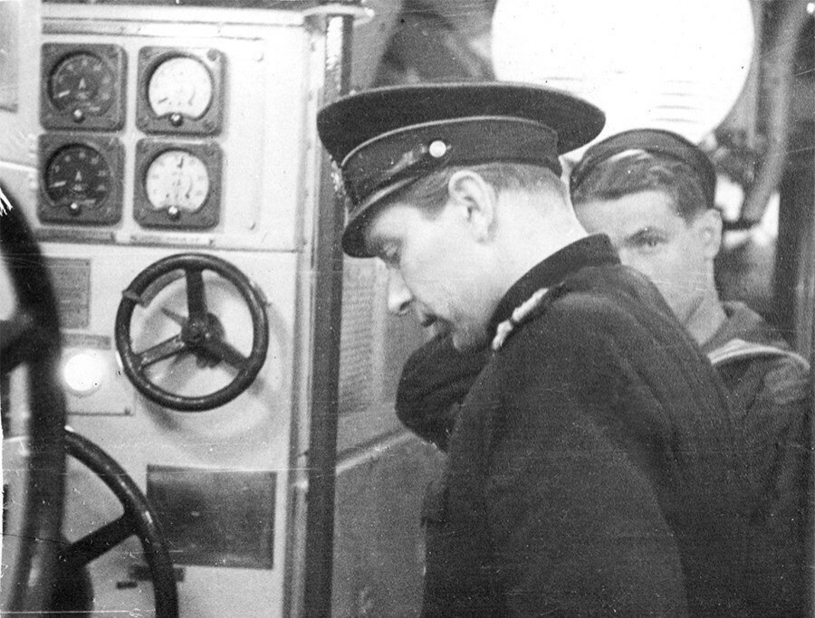
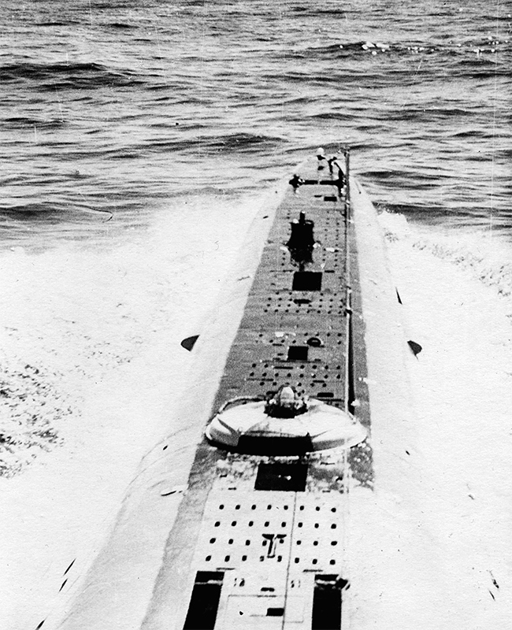

 <div style="text-align:center"><span style="font-size: x-large;">Из старого альбома</span></div><br/><br/><div style="text-align:left"><span style="font-size: medium;">Владимир Сергеевич Фокин,  командир БЧ-5 подводной лодки С-276. У контроллера главного гребного электродвигателя, шестой отсек. 1959 год. Гремиха.<br/><center><br/><a href="https://fotki.yandex.ru/next/users/galley42/album/215850/view/1109565" target="_blank" target="_blank" rel="nofollow"></a><br/></center><br/><a name="cutid1"></a><br/>Уходим в море. Вид с мостика С-276. <br/><center><br/><a href="https://fotki.yandex.ru/next/users/galley42/album/215850/view/1109564" target="_blank" target="_blank" rel="nofollow"></a><br/></center></span></div> 